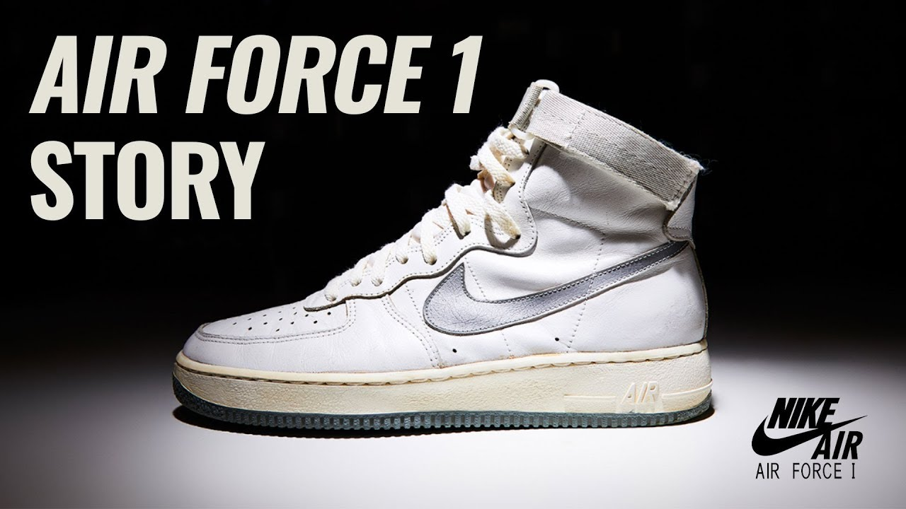
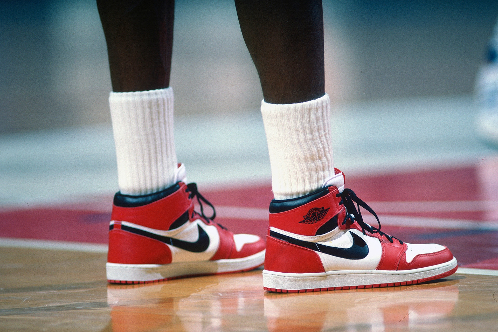
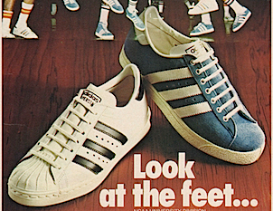
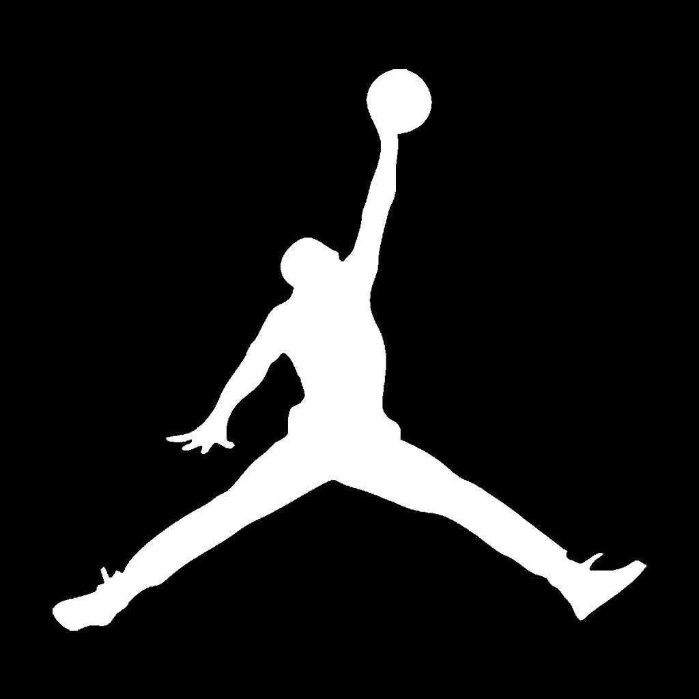
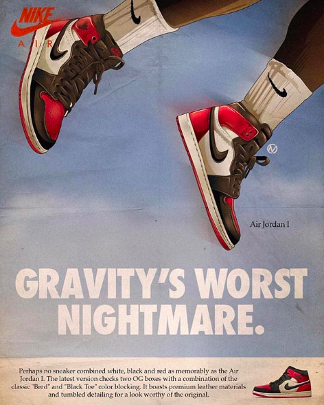

Sneakers



Nike
 Nike Founder(s): Phil Knight and Bill Bowerman
Nike Founder(s): Phil Knight and Bill Bowerman History:
- Purpose of the shoe: Track&Field runners.
- Before "Nike" it was "Blue Ribbon Sports". (1964)
- Nike was started because relations with the Japanese suppliers (Tiger) went bad.
- Phil Knight initially wanted to call the company "Dimension 6".
- Name was inspired by the Greek Goddess of Victory "Nike"
- The "Swoosh" logo was created for $35 by Carolyn Davis who was a design student.
Most Poular Shoe: Air Force 1
- The Nike AF1 design was created by Bruce Kilgore
- Nike debuted its soon be most popular shoe in 1982 called "Air Force 1" (High-Top)
- Quickly adopted by big men in the NBA for cusion (heel) support.
- Nike releases AF1 low-top in 1983
- The Nike AF1 was almost discontinued in 1984
- Local Baltimore retailers pushed for more colorways and saved the shoe
Jordan
  Jordan Founder(s): Nike and Michael JordanHistory:
- Purpose of the shoe: Basketball performance
- Jordan originally wanted to sign with Adidas
- Nike offered Jordan $500,000 a year cash for 5 years if he signs
- Shoes was designed by Peter Moore, Tinker Hatfield, Bruce Kilgore.
- Logo created by: Peter Moore and Tinker Hatfield
Most Popular Shoe: Air Jordan 1
- Originally price was $65 (1985)
- Nike sold $70 million worth of the shoes just a month into the release
- NBA banned the original Air Jordan for not meeting the leagues policy on uniform and colors
- Jordan got a $5000 fine every game he wore the shoes but Nike paid for it
Adidas
History:
- Purpose of the shoe: Athletic performance.
- Got the name "Adidas" from nickname "Adi" and last name "(Das)sler".
- Adi started the company at age 49.
- Before "Adidas" it was "Gerbruder Dassler Schuhfabrik" in 1924
- Dasslers brother (Rudolph Dassler) is the founder of Puma
Most Popular Shoe: Adidas Superstar
- Was originally a basketball shoe released in 1969
- Adidas became a fashion trend when hip-hop group "RUN DMC" release the song "My Adidas"
- RUN DMC became the first hip-hop group to be endorsed by a sports company